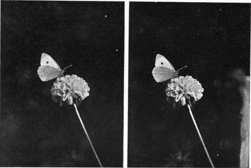
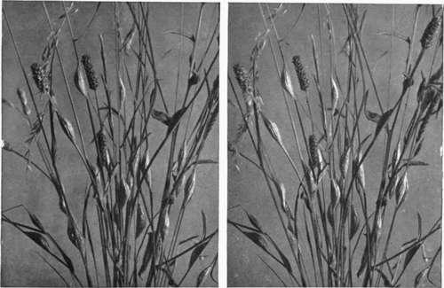

Birds And Their Nests And Eggs. Part 9
Description
This section is from the book "Nature Photography For Beginners", by E. J. Bedford. Also available from Amazon: Nature Photography for Beginners.
Birds And Their Nests And Eggs. Part 9
I have arranged to have tea to-day at the keeper's cottage, which is not far away, as we can work on while the light still remains good, and then go in to tea. You still have ten unexposed plates left. I should like to look at the Thrush's nest we found last week. Here it is, but the young birds are only a day or two old and too young to take out of the nest to photograph. We will look for some more. Did I hear you say you had found another nest containing young birds? That's right. Yes, these are just the right size for our purpose. I should like you to try and get them on a branch near the nest and take their portraits. I will help you, as I know from experience it is not easy work. There are four in the nest, and when you place them on the branch one will be sure to hop off, and when you replace that one, two more will come down. They are just beginning to know they have wings and are anxious to use them, but at present they are not able to do so at all gracefully. Bring your camera and focus on this branch; notice how much of it you include on the focussing screen, and I will try and perch all the young birds on the branch between the limits of your view. Now there are three of them; focus as quickly as you can and use stop f8; set your shutter at the one-fifteenth of a second and get ready to make the exposure. Ah! there goes another down; I will endeavour to keep these two while you fetch him and set him up again. Place your hand over him for a few moments and then carefully withdraw it; this will help to make him settle down. There, now quickly, that's right. I think they were still, but you had better make another exposure in case they were not. They seem less inclined to move now; so put another plate in and get ready. Now I can hear the parent bird calling them. There she is, look, just above us with some worms in her mouth. She wonders what we are doing, no doubt. You must be quick or they will get restless. There, now they are all in good positions. Have you exposed? Yes; all right, we will put them back in the nest and the parent bird will visit them as soon as we retire.
Look on the tree trunk over there; do you see anything amongst the ivy ? No ? Look again a little closer. What is that dark hole in the centre of that clump of moss? It is a nest of the common Wren, so artfully concealed amongst the ivy that I think very few persons would notice it. Do not put your finger in it as it may cause the bird to desert it if you do. The Wren is very particular in this respect. We cannot photograph the eggs in any case, so will be content to take the outside of the nest amongst its surroundings, which will make a pretty picture. You will notice this is a circular domed nest somewhat like the Chiffchaff's, but is built of moss in this case. The Wren, however, accommodates herself to circumstances and will build her nest of various materials, according to the situation chosen. I have found it constructed of hay in a hay-stack; of straw in a straw-stack; of dead leaves and moss in a bank; of dead leaves entirely in a faggot-stack or in the corner of an outhouse, and have found several beautiful examples about eighteen inches above the ground in bracken, the nest having been placed amongst the dead fronds of the last year's growth and constructed of the same material. The nest will, in each case, be lined with either feathers, hair, or fine moss. The different choice of materials for the outside of the nest leads one to think the Wren, in common with some other birds, possesses a certain amount of reasoning power, and is able to construct her nest of materials to match its surroundings, thus helping to make it more difficult to discover. Certainly this is almost invariably done.
Fig. 54. Large White Butterfly.
Fig. 55. Cocoons of Six-spot Burnet Moth.
Now let us make our way into the orchard at the back of the farm. There is a Missel Thrush's nest there situated in the fork of a walnut tree. I saw it a day or two ago, and it is about level with the top of your head. You will be able to get two views of this, one to show its position in the branches of the tree, and another showing the nest and eggs. For the latter you will have to get something to raise your camera or it will not be high enough. While you are arranging for and making the first exposure, I will go and see what I can find to help you to obtain the second view.
Here we are, a pair of steps I have borrowed from the house and three stout poles, which can be joined to the legs of your tripod and will make it about twice its usual height.
Take the camera off first, because it will be easier to tie the joints when the tripod lies upon the ground. Where is your string? You have forgotten to bring any to-day! Dear me, that might have been unfortunate, but I have some in my pocket, and I think it will be enough for our purpose. Will you hold the pole so that it overlaps the leg of the tripod about six inches, and I will tie them together. It is best to do this in two places near the end of each length, as there will be less chance of them shifting when erected. There, I have bound it round tightly, and should like you to do the other two joints in a similar manner, while I hold the tripod and pole. Yes, pull the string a little tighter if you can; that is better. Now raise the whole up and place it as near as you can in the position you will want. Now put the steps close by and mount them with the camera, which has to be fixed to the top of the tripod as usual. Be careful you do not overbalance, and incline the camera by means of the tilting-board until you get a good view of the nest and its contents on the screen. Let me look at it. Yes, that will do. Now make your exposure and be careful not to shake the camera while doing so. It is probably less steady now than usual, and will require extra care to prevent any vibration, which would, of course, spoil the definition of the image obtained. This arrangement having taken some time to get ready, you had better expose another plate in case the first one should be unsatisfactory. If they both turn out all right so much the better.
Continue to:
- prev: Birds And Their Nests And Eggs. Part 8
- Table of Contents
- next: Birds And Their Nests And Eggs. Part 10
Tags
nature, photography, art, birds, camera